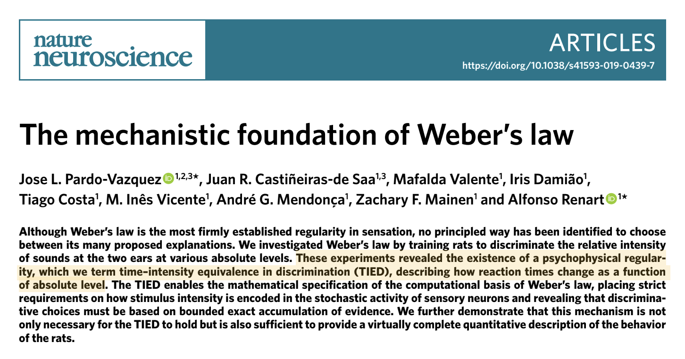

Master's Projects
During the development of my master thesis in Neuroscience at the Champalimaud Foundation, I participated in two different projects. One about the mechanistic foundation of Weber's Law and other about how the speed of our movements presented in a decision report is correlated with the level of confidence in that same decision. In this page you can find more about the two experiments and my participation in each of them.
LEARN MORE about Renart's LabThe Mechanistic Foundation of Weber's Law
Weber's Law is a psychophysical regularity of the discrimination process, stating that the difference between two stimuli intensity in order for them to be perceived as different is proportional to the initial stimulus intensity. That is, if you are carrying a weight of 60kg you might not notice if I add another kilo, but if to start by carrying 2kg you might perceive an increase of weight if I add an extra kg to the initial 2. Even though it is a very old psychophysical regularity, the mechanistic foundation able to explain it was still uncertain until the work performed in Renart's Lab at Champalimaud Foundation. the work developed in the lab allowed to identify another psychophyscial regularity - the TIED (Time-intensity equivalence in discrimination), which describes how reaction times involved in the sensory intensity discrimination change as function of the overall magnitude of the stimuli being discriminated. the identification of TIED allowed to develop the specifities of a mechanism able to justify Weber's Law. In this project published on Nature Neuroscience (below), I was responsible to perform the adaptation of the initial rodents task to humans, collecting the results and perform a first analysis of the data. The results allowed to conclude about the robustness of the mathematical model behind Weber's Law, and importantly the generality of the TIED.
Movement-correlates of decision confidence in human decision making
In previous experiments it was identified that the movement's speed - vigor - as a function of strength of evidence (easiness of the stimulus) follows the same pattern as the level of confidence in a decision. This work was developed not only with the goal of exposing this implicit relationship between response movement speed and the level of confidence, which it did, but also to understand how confidence can interplay in recent findings relating vigor to reward obtained per unit of time. In other words, recently it has been suggested that vigor is influenced by the brain's computation of cost of time, which is by itself computed as an average of the reward obtained per unit of time. The idea was to compute an experiment able to integrate decision confidence in this computation of cost of time. The findings of the developed experiment, which was entirely conducted by me, were presented in my master thesis (below) and are soon going to be submitted to peer-review.